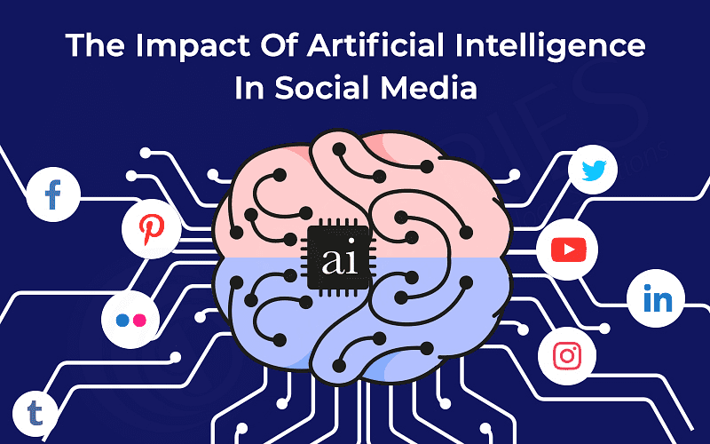

Applications on Artificial Intelligence
Artificial Intelligence has different applications in today's society. It is becoming fundamental for today's time since it can solve complex issues with an efficient way in numerous businesses, such as Healthcare, entertainment, finance, education, etc. AI is making our lifestyle more comfortable and fast.
1. AI in Astronomy
Artificial Intelligence can be exceptionally useful to solve complex universe issues. AI technology can be helpful for understanding the universe such as how it works, origin and more.
2.AI in Gaming
AI can be used for gaming purpose. The AI machines can play strategic games like chess, where the machine needs to think of a large number of possible places.
3.AI in Healthcare
In the last, five to ten years, AI becoming more advantageous for the healthcare industry and going to have a significant impact on this industry.
Healthcare Industries are applying AI to make a better and faster diagnosis than humans. AI can help doctors with diagnoses and can inform when patients are worsening so that medical help can reach to the patient before hospitalization.
AI in Social Media
Social Media sites such as Facebook and Snapchat contain billions of user profiles, which need to be stored and managed in a very efficient way. AI can organize and manage massive amounts of data. AI can analyze lots of data to identify the latest trends, hashtag, and requirement of different users.

Links: